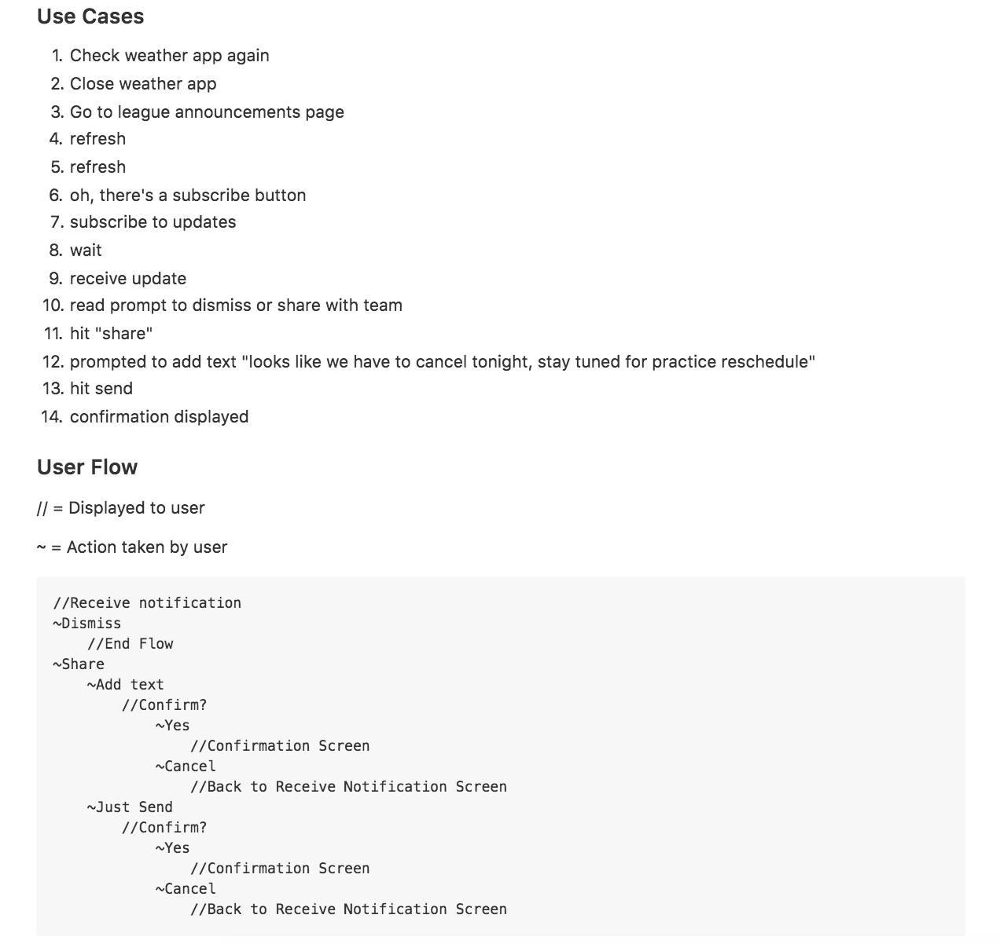

Why this project?
This was our only mobile design project for the Iron Yard's design course. The task was to create a mobile app for rec sports leages - focusing on the coaches flow - where they could message their teams, view player stats stats, and scroll through a news feed.
Inspiration
Newsfeed | Twitter
I appreciate the way that twitter uses active states to expand and collapse features to preserve real estate. For example, when you land on the twitter page, the "what's happening" field is collapsed, but prominent. When you click on it, however, it expands to include other options. Also, 140 characters is just the right amount of space to indicate what sort of content will be in a post.
Chat | Slack
Slack is doing it right in terms of chat. It's so straightforward. Slack is a little more complex than the Kickball chat needs to be (ex - I don't think we'll need file sharing?) but the way the conversations are organized & how easy they are to start - are both things to aspire to w/ my design.
Leaderboards & Stats | App Store Top Charts
Getting super meta here. I was looking for an app that had a really obvious sort selector. In my experience building dashboards for users within other softwares, I notice that people don't use the sort filters proportionally to how useful they are, and I hypothesize that it's because they're buried under an ambiguous funnel icon. A couple apps with sort filters that I use were Modcloth and Amazon - but I was actually disappointed with how un-obvious they were. So for this research, I actually went to the app store itself to look for a better example, and noticed that they had the top charts page - with three ways to sort - paid, free, and top grossing - all in a horizontal nav. I loved it because it's low profile but still pretty obvious. This only works when you have a few metrics to sort by, and in this case, we do. I suppose you could always have navigation arrows if you had to extend the metric list.
Research
I went deep with the user stories for the mobile app, since our focus was heavily UX. I developed personas so that I could design for all of the user types. Then I wrote user stories for one flow. After that, I came up with scenarios, which go a little deeper than user stories and add some context like motive, handicaps, etx. After that, I wrote use cases, which are step by step user behaviors that a person will go through before completing the task. Then, finally, I was able to come up with a smart user flow for that use case. 
Paper Prototype
So my first attempt at paper prototype testing was unsuccessful. Here are some of my failure points:
- Recruitment: user was not an iPhone user and was therefore unfamiliar with how you normally behave w/ notifications.
- Handwriting: user was squinting to read my handwriting, which would not happen in a real app scenario, and the help I gave him to read definitely dirtied my results
- Methodology: Instead of sketching elements, I tried to sketch out every possible state the screen could be in after interactions, which was super confusing
So I learned a lot, but didn't feel like I understood the failures of my flow, so I tried again

With this cleaner prototype, I got some great feedback on the flows themselves.
- Hierarchy: It matters a lot in mobile since everything is so small, but you have to get creative with how you show it since only a certain range of type sizes will work on a mobile device
- Consistency: The user should be able to see the notification that they are commenting on, the whole time across the journey.
- Tie it in: This flow doesn't exist in a vacuum - what can the user do after? (This is in the prototype, but the "go to chat" button was drawn in later
Style Tiles
I created three different style tiles to explore colors, typography, and textures. One of them was very clean and modern and appealed to my aesthetic personally, but in the end I chose the flatter one which had a humanistic typeface and flat elements, which left room for layering in a few more textures.
Mockups
Once I tested the flows, I was able to optimize the screens based on the feedback I got from my classmates on the style tiles and the paper prototype.

Prototype
I used invision to turn the mockup screens into a clickable prototype. You can click around on the live thing here.